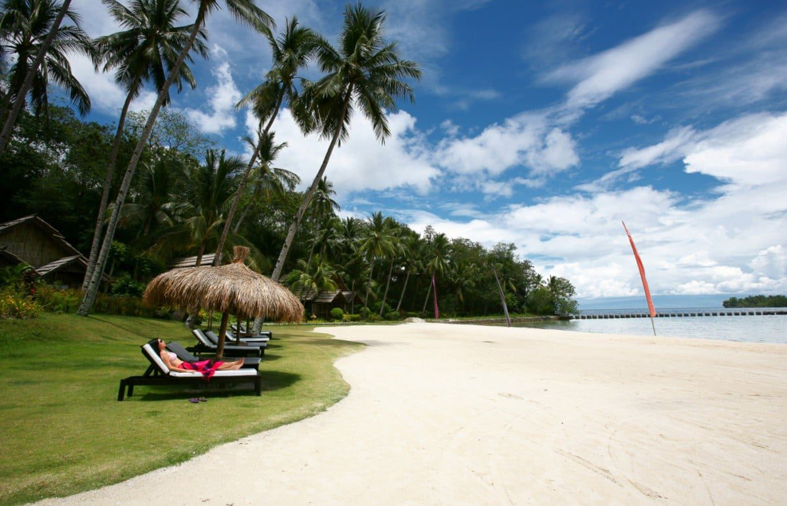

Manila
Luzon
- Bus #24 nearby
- Metro: Central Station
- Free parking

Bicol
Luzon
- Bus #10 nearby
- Metro: North Station
- Paid parking

Leyte
Visayas
- Bus #10 nearby
- Metro: North Station
- Paid parking

Palawan
Luzon
- Bus #10 nearby
- Metro: North Station
- Paid parking

Davao
Mindanao
- Bus #10 nearby
- Metro: North Station
- Paid parking

Masbate
Visayas
- Bus #15
- Metro: East Line
- Street parking

Bohol
Visayas
- Panglao International Airport
- Ferry from Cebu
- Local van rentals

Siargao
Mindanao
- Sayak Airport
- Motorbike rentals
- Van transfers
Cebu
Visayas
- Mactan-Cebu International
- MyBus service
- Grab available

Vigan
Luzon
- Partas Bus Terminal
- Kalesa tours
- Walking tours

Boracay
Visayas
- Caticlan Airport
- Ferry service
- Bike rentals
Batanes
Luzon
- Basco Airport
- Bicycle tours
- Van tours
Sagada
Luzon
- Coda Lines Bus
- Hiking trails
- Jeepney tours
Coron
Luzon
- Busuanga Airport
- Island hopping
- Van transfers
Siquijor
Visayas
- Ferry from Dumaguete
- Motorbike rental
- Tricycle tours
Camiguin
Mindanao
- Camiguin Airport
- Motorbike tours
- Multicab service
Banaue
Luzon
- Ohayami Bus
- Rice terrace tours
- Jeepney transport
Zambales
Luzon
- Victory Liner
- Island hopping
- Beach transfers
Iloilo
Visayas
- Iloilo International
- Heritage walks
- Taxi service
Batangas
Luzon
- JAM Transit
- Beach resorts
- Private transport
Dumaguete
Visayas
- Sibulan Airport
- Easy bike rental
- Tricycle tours
Cagayan de Oro
Mindanao
- Laguindingan Airport
- White water rafting
- City transport
Tagaytay
Luzon
- DLTB Bus
- Taal viewing
- Tourist vans

Baguio
Luzon
- Victory Liner
- City taxis
- Walking tours

Puerto Princesa
Luzon
- International Airport
- Underground River
- Van tours

Bacolod
Visayas
- Silay Airport
- Food tours
- City transport
×

Popular Activities: